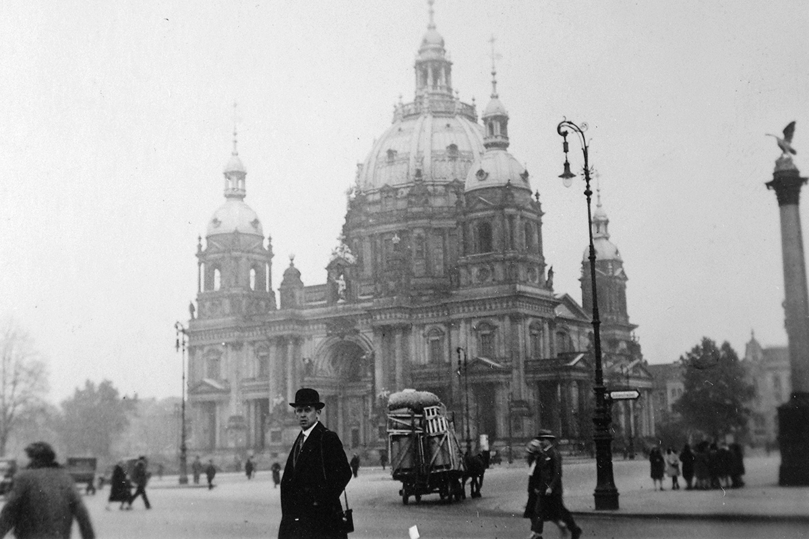

The 1920s were one of the most dramatic decades in modern German history. After Germany’s defeat in the First World War, the country experienced political upheaval, economic hardship, cultural change, and eventually a period of greater stability.
In 1918, Kaiser Wilhelm II abdicated, bringing the German Empire to an end. A new democratic government was established, which became known as the Weimar Republic. It faced major challenges from the beginning. The Treaty of Versailles, signed in 1919, placed restrictions and financial reparations on Germany. Many Germans considered the treaty unfair and blamed the new government for accepting it.
The early 1920s were particularly difficult. Germany struggled to pay reparations, and in 1923 French and Belgian troops occupied the Ruhr, an important industrial region. The German government encouraged workers there to resist by refusing to cooperate. At the same time, the government printed large quantities of money to support the workers, contributing to hyperinflation. Prices rose extremely rapidly, and people's savings could become almost worthless.
The situation began to improve after 1923. Under Gustav Stresemann, Germany introduced economic reforms and worked to improve relations with other countries. The Dawes Plan of 1924 helped reorganize Germany's reparations payments and encouraged American investment. Germany also joined the League of Nations in 1926, showing that it was becoming more accepted internationally.
Although the Weimar Republic remained politically fragile, the middle and later years of the decade were relatively stable. The 1920s therefore became a period of both uncertainty and renewal, laying the foundations for the cultural developments for which the decade is remembered.
Life in Germany during the 1920s varied greatly depending on a person's wealth, occupation, and where they lived. The decade brought major changes to society, but it was also marked by economic uncertainty. In large cities such as Berlin, people experienced a rapidly changing urban culture. Cinemas, theatres, cafés, department stores, and dance halls became popular forms of entertainment. Radio was also becoming increasingly important, giving families a new way to hear music, news, and other programs at home. Fashion changed alongside society. Some young women adopted shorter hairstyles and more modern clothing, while men and women increasingly participated in sports and other leisure activities. These changes were especially visible in cities, although more traditional lifestyles remained common in rural areas. Education and employment were also changing. Women had gained the right to vote after the First World War and entered professions that had previously been dominated by men. However, women still faced significant social and economic barriers. Daily life was strongly affected by the economy. The hyperinflation crisis of 1923 made ordinary shopping extremely difficult because prices could change rapidly. Later in the decade, conditions improved for many people, but economic stability depended partly on foreign investment and loans. For many Germans, the 1920s were therefore a mixture of opportunity and uncertainty. Modern entertainment and social freedoms existed alongside political arguments, economic worries, and memories of the First World War. These contrasts made the decade one of the most important periods in Germany's modern history.
